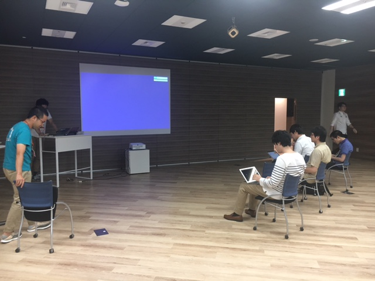
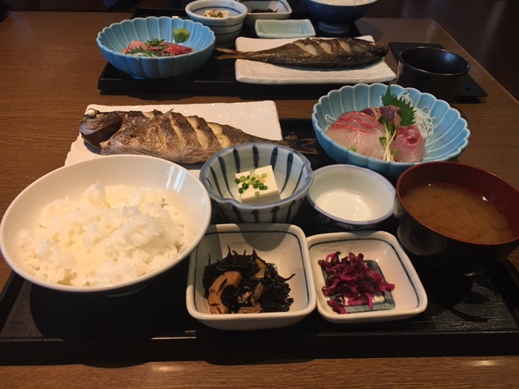

Pythonもくもく自習室 #2に参加しました #rettypy
目次
自己紹介タイム
各々今日やることを紹介。Django, fibit, PyConの準備, スクレイピング, システムトレード, 本のレビューなどありましたね。
やったこと
PyCharmからJupyterを触ってみる
TerminalからJupyter立ち上げて使ったほうが速かったです。 「これぞ！」っていうPyCharmからJupyterを触る理由が見つかったらまた手をだすかもしれませんが、どうなんでしょう。ショートカットとかぶつかりまくって大変そう。
bottle
チュートリアルを流し読み。Django使うまでもない軽いやつ作るときはこっちのほうがいいかも。
EffectivePython 第3章 クラスと継承
本を読んでたメモです。あしからず。
項目22: 辞書やタプルで記録管理するよりもヘルパークラスを使う
collectionモジュールのnamedtupple型
- namedtuppleの限界 (namedtuppleは多くの場合に有用だが、害の方が多くなることもある)
- namedtuppleクラスでは、デフォルト引数値を指定できない。データに多くのオプションプロパティがあるときにやっかい。 少数とは言えない個数の属性を扱うなら、それ専用のクラスを作るほうがよい選択。
- namedtuppleインスタンスの属性値は、数字の添字とイテレーションを使ってアクセスできる。外部化されたAPIの場合は特に、このような意図しない使い方をされていたために、後に本物のクラスに移行するのが難しくなることがある。namedtuppleインスタンスのすべての用途を制御できていないなら、自分のクラスを定義したほうがよいでしょう。
覚えておくこと
- 値が他の辞書や長いタプルであるような辞書を作るのは止める。
- 完全なクラスの柔軟性が必要となる前は、軽量で変更不能データのコンテナであるnamedtuppleを使う。
- 内部状態辞書が複雑になったら、記録管理コードを複数のヘルパークラスを使うように変更する。
項目23: 単純なインターフェースにはクラスの代わりに関数を使う
覚えておくこと
- Pythonのコンポーネント間の単純なインターフェースは、たいてい、クラスを定義してインスタンス化しないでも、関数で済ませられる。
- Pythonでは関数とメソッドの参照はファーストクラスなので、他の型同様、式中で使うことができる。
- 特殊メソッド __call__ は、クラスのインスタンスが、Pythonの普通の関数として呼び出されることを可能にする。
- 状態を保守するために関数が必要な場合、状態を持つクロージャを定義するかわりに、 __call__ メソッドを提供するクラスを定義することを考える。
成果発表

(発表してる最中の写真取ればよかった。ちょっと写真取るタイミングミスった感がある。)
- タケオカ もくもく会初参加。
- Pythonチュートリアル(オライリー)を読んでいたが、内職してたらそっちに集中してしまいました。
- 次回はものを作りたい。
- @ryoo17 Djangoでアプリを作ってました。書籍管理アプリ。漫画を管理するもの。
- @driller
- 本がでます→ PythonユーザのためのJupyter[実践]入門
- finpyというものを運営してます。次回未定。PyConでRejectされたものをやるかも？
- ホロビューズ
- ツツミ 朝はシステムトレードをPythonでやろうとして、データを取ってくるところまで実施。
- カワグチ(@_skwbc)
- ニューラルネットとその実装をTensorFlowでやろうとした。チュートリアルやってました。
- Understanding LSTM Networks – colah’s blog がわかりやすかった。
- @marugari 購買分析のLibraryの改造をしてた。計算のズレのあたりがついたので、後で見直す。
- タケノ 画像処理コトハジメ。
- どのFWを触ろうかという比較をしたり、データセットを準備したところまで実施した。
- chainer/comparison.rst に各FWごとの比較があるのでそちらが参考になった。
- オオヒラ 前処理の手続きを楽にしようとしてた。統計よりの作業。
- イトウ@pir0w PyQやってました。中級をスタートしてた。
- 正規表現は慣れが必要かなと思った。もう少しでDjangoにいけそう。
- 苦労したところ。for文でenumrateが慣れが必要かなと。←イテレータ系が独特かなと思うけど、覚えると楽。
- ITO Shogo
- 自社サービスの遅いところ、検索部分のカイゼン。キャッシュに入れるデータが多すぎて取り出す時に時間かかってた。キャッシュに入れたほうが遅いという…
- ISCONが好きで、それを模した社内コンテストをするための準備をしてた。
- @mocamocaland
- いちばんやさしいPythonの教本 を読んだり、Blogを書いてました。
- 自分がPython始めるころにあったら良かったなと思った。
- @kashew_nuts 上記参照
- mdrms 電気をつけたまま寝落ちすることが多いので、値落ちの状況を可視化したい→fitbitの新把握データからとった。
- @shinyorke PyConの準備してました。
- Airflow: Batch処理、前処理などを毎日動かすために使用。
- クローラーが走った後に次の処理に行かない。適当なpython実行ファイルで試したら動いたが、クローリングにScrapyを使用しており、そちらで試すとダメらしい。
その他
お昼は魚のお店に行ったので釣りの話を聞いていたり、キャリアの話をしていたりしてました。もくもくタイム間にパッケージングの話をしたり、おいしいお菓子をいただいたりしてましたね。
次回の参加はこちらから→ Pythonもくもく自習室 #3 @Rettyオフィス - connpass

お昼に食べた定食はボリューム満点でした。うまかった。